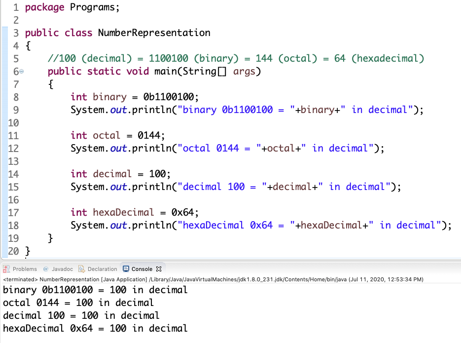

Binary representation of numbers:- For representing binary numbers, the binary representation should be prefixed with 0b or 0B.
Octal representation of numbers:- For representing octal numbers, the octal representation should be prefixed with 0.
Decimal representation of numbers:- For representing decimal numbers, the decimal representation should NOT be prefixed with anything. The default representation is decimal representation.
Hexadecimal representation of numbers:- For representing hexadecimal numbers, the hexadecimal representation should be prefixed with 0x or 0X.
